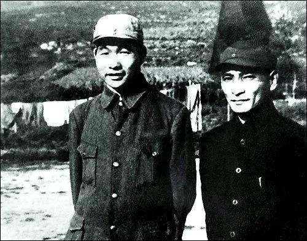
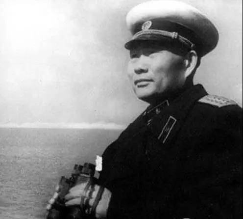

返回上一层
不会水司令永远留在我们心中
23岁成为中将师代表
- 萧劲光少年时期就酷爱军事。在第一次国共合作时，他如愿以偿地投笔从戎了。当时中共中央学习苏联的做法，在新改编的国民革命军设置党代表制度，需要一批懂军事的共产党员到军队做政治工作。此时周恩来同国民革命军第二军党代表兼政治部主任李富春商量，决定让萧劲光担任国民革命军第二军第六师的党代表。1925年，萧劲光被正式任命为国民革命军第2军第6师党代表兼政治部主任，中将军衔。那时，他还不满23岁。晚年，萧劲光曾与人戏言：“当了一辈子兵，提了两级军衔：从中将到大将。”
- 
旱鸭子”当上了海军司令员
- 1949年10月，刚刚指挥完衡宝战役的萧劲光收到了一封加急电报，毛主席要他火速进京，有急事面商。原来，随着三大战役胜利结束，全国大部分地区得到解放，中央已经着手组建空军和海军。一支强大的军队不能没有海军。毛主席遍览诸将，最终把目光投在了萧劲光身上。

- 1950年1月12日，中央军委发布任命萧劲光为海军司令员的正式命令，他深感责任重大，但是心中充满力量，信心勃勃地走马上任了。
海军司令员向渔民借船
- 海军组建之初，家底几乎等于零。上任之初，萧劲光风尘仆仆来到海防重镇威海，并计划到刘公岛进行设防勘察。可是，当时驻威海的海军也刚刚成立，连一条船都没有，只好找当地的渔民去借。朴实的胶东渔民在得知眼前这位就是新中国的海军司令员时，不禁睁大眼睛大说一声：“您是海军司令，还要租我们的渔船？”问者无意，萧劲光的心却被刺痛了，他对身旁的随行人员道：“大家都要记住今天这个日子，海军司令员可是租老百姓渔船视察刘公岛的！”直到晚年，萧劲光仍然对这件事记忆犹新：“渔民的话对我刺激很大。可当时有什么办法呢？我这个海军司令当时就是两手空空啊！”
- 打造中华民族的海上长城
- 萧劲光任海军司令员后，很快掌握了海军的相关知识，熟悉了海军的事务，主持制定了海军建设的一系列方针、原则，克服重重困难，在较短的时间内，完成了创建海军的任务。短短几年时间里，海军就拥有了十余所正规军事院校和预备学校，成立了鱼雷快艇部队、海军航空兵部队、潜艇部队，完成从小到大的蜕变，迅速成长为一支具有相当规模的海上战斗力量，并圆满地完成了保卫海防的任务
- 